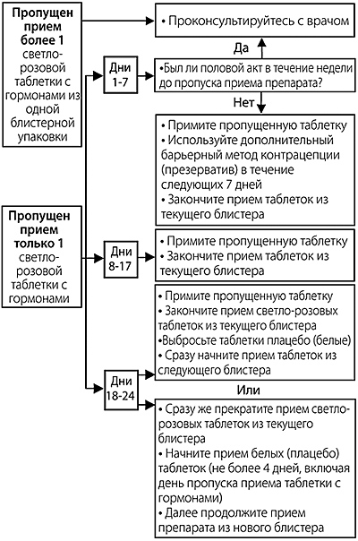

|
 |
| ЭСТЕРЕТТА® (ESTERETTA®) drospirenone, estetrol таб., покр. пленочной оболочкой | ||||||||||||||||||||||||
|
Клинико-фармакологическая группа: Комбинированный гормональный контрацептив (эстроген+гестаген) Номер и дата регистрации: ЛП-№(000350)-(РГ-RU) от 03.09.21 Код ATX: G03AA12 |
Владелец регистрационного удостоверения: зарегистрировано Представительство: | |||||||||||||||||||||||
Форма выпуска, состав и упаковка Таблетки, покрытые пленочной оболочкой светло-розового цвета, круглые, двояковыпуклые, с логотипом в форме капли на одной стороне (24 шт. в блистере).
Вспомогательные вещества: лактозы моногидрат, натрия карбоксиметилкрахмал, тип A, крахмал кукурузный, повидон K30, магния стеарат. Состав пленочной оболочки: АкваПолиш® Розовый 044.08 МС (AquaPolish® Pink 044.08 MS) (гипромеллоза, гидроксипропилцеллюлоза, тальк, масло хлопковое гидрогенизированное, титана диоксид, краситель железа оксид красный). Таблетки плацебо Таблетки, покрытые пленочной оболочкой белого или почти белого цвета, круглые, двояковыпуклые, с логотипом в форме капли на одной стороне (4 шт. в блистере). Вспомогательные вещества: СтарЛак® (StarLac®) (лактозы моногидрат и крахмал кукурузный), магния стеарат. Состав пленочной оболочки: АкваПолиш® Белый 014.17 МС (AquaPolish® Wite 014.17 MS) (гипромеллоза, гидроксипропилцеллюлоза, тальк, масло хлопковое гидрогенизированное, титана диоксид). 28 шт. - блистеры (1) с 1 наклейкой с указанием дней недели и футляром для хранения блистера - пачки картонные. | ||||||||||||||||||||||||
| ||||||||||||||||||||||||
Описание препарата основано на официально утвержденной инструкции по применению и утверждено компанией-производителем для издания 2022 г. | ||||||||||||||||||||||||
Фармакологическое действие |
Фармакокинетика |
Показания |
Режим дозирования |
Побочное действие |
Противопоказания |
Беременность и лактация |
Особые указания |
Передозировка |
Лекарственное взаимодействие |
Условия хранения и сроки годности |
Условия реализации
Фармакологическое действие
Эстеретта® - комбинированный гормональный контрацептив (КГК), в состав которого входят прогестаген дроспиренон и эстроген эстетрол. Прогестаген дроспиренон подавляет овуляцию, главным образом, за счет механизма обратной центральной связи, что ведет к снижению секреции гипофизом лютеинизирующего гормона (ЛГ). Дроспиренон обладает фармакологическим действием, сходным с действием естественного человеческого гормона прогестерона. Эстроген эстетрол также участвует в обеспечении контрацептивного действия за счет подавления выработки фолликулостимулирующего гормона (ФСГ), однако главным его действием в составе КГК является компенсация действия прогестагена на эндометрий и обеспечение адекватного контроля цикла кровотечений во время приема препарата. Эстетрол идентичен по составу естественному гормону, который вырабатывается во время беременности печенью плода человека. Режим дозирования
Препарат предназначен для приема внутрь по 1 таблетке ежедневно, независимо от приема пищи, в порядке, указанном на упаковке, примерно в одно и то же время дня, запивая небольшим количеством воды. Перед началом применения препарата Эстеретта® следует проконсультироваться с лечащим врачом. Когда и как принимать препарат Эстеретта® Каждая блистерная упаковка препарата Эстеретта® содержит 28 таблеток: 24 светло-розовые таблетки с гормонами (номера 1-24) и 4 белые таблетки плацебо, не содержащие гормоны (номера 25-28). Каждый раз, когда Вы начинаете прием таблеток из нового блистера, начинайте с таблетки номер 1 (светло-розовая таблетка с гормонами), находящейся в левом верхнем углу блистера (см. "Старт"), Выберите из прилагаемых самоклеящихся этикеток с названиями дней недели ту полоску, в которой серая колонка начинается со дня недели, в который Вы начнете принимать таблетки. Например, если Вы принимаете первую таблетку в среду, выберите наклейку с обозначением "Ср". Наклейте полоску на часть упаковки, ограниченную линией, предварительно совместив символ на этикетке с аналогичным символом на блистерной упаковке. После этого каждому дню недели на этикетке будет соответствовать ряд таблеток. Это позволит Вам убедиться, что Вы приняли таблетку в конкретный день. Принимайте 1 таблетку ежедневно примерно в одно и тоже время, запивая небольшим количеством воды. Следуйте по направлению стрелок на блистере так, чтобы сначала принять все светло-розовые таблетки с гормонами, а затем белые таблетки плацебо. В течение 4 дней приема белых таблеток плацебо у Вас должно начаться менструальноподобное кровотечение (так называемое кровотечение "отмены"). Обычно кровотечение "отмены" начинается через 2-4 дня после приема последней светло-розовой таблетки с гормонами, и может не прекратиться до начала приема таблеток с гормонами из следующего блистера. Прием таблеток с гормонами из следующего блистера следует начать сразу же, т.е. на следующий день после приема последней таблетки плацебо из предыдущего блистера, даже если у Вас еще не прекратилось кровотечение "отмены". Это означает, что Вы всегда будете начинать прием таблеток из нового блистера в один и тот же день недели, и то, что У некоторых женщин может не быть кровотечения "отмены" каждый месяц во время приема белых таблеток плацебо. Если Вы принимали препарат Эстеретта® каждый день в точном соответствии с инструкцией, вероятность беременности мала. Начало приема первой упаковки препарата Эстеретта При отсутствии приема гормональных контрацептивов в предыдущем месяце Следует начинать прием препарата Эстеретта® в первый день менструального цикла (т.е. в первый день начала менструального кровотечения). При начале приема препарата Эстеретта® в первый день, сразу же развивается контрацептивный эффект. В этом случае нет необходимости в применении дополнительных методов контрацепции. Также можно начать прием препарата на 2-5 день цикла, в этом случае необходимо дополнительно использовать барьерные методы контрацепции (например, презервативы) в течение первых 7 дней приема препарата Эстеретта®. При переходе с другого комбинированного гормонального контрацептива (комбинированного перорального контрацептива (КОК), вагинального кольца или трансдермального пластыря) Прием препарата Эстеретта® на следующий день после приема последней таблетки из упаковки предыдущего перорального контрацептива, который Вы принимаете в настоящее время (перерыв после отмены делать не нужно). Если Ваш предыдущий пероральный контрацептив также включает таблетки плацебо, Вы можете начать прием препарата Эстеретта® на следующий день после приема последней таблетки с гормонами. Рекомендуется проконсультироваться с лечащим врачом. Также можно начать прием препарата Эстеретта® позже, но не позднее, чем на следующий день после окончания планового перерыва в приеме предыдущего контрацептива (либо приема последней таблетки плацебо из предыдущей упаковки). Если Вы используете вагинальное кольцо или трансдермальный пластырь, прием препарата Эстеретта® желательно начинать в день удаления кольца или пластыря. Прием препарата можно начать позже, но не позднее того дня, когда должен быть наклеен очередной пластырь или введено новое кольцо. При соблюдении данных рекомендаций необходимости в применении дополнительных методов контрацепции нет. При переходе с таблеток, содержащих только прогестаген ("мини-пили") Можно прекратить прием "мини-пили" в любой день и начать принимать препарат Эстеретта® на следующий день. В этом случае рекомендуется дополнительно применять барьерные методы контрацепции (например, презервативы) в течение первых 7 дней приема препарата Эстеретта®. При переходе с контрацептивов, содержащих только прогестаген (инъекционные формы, имплантаты или внутриматочная система (ВМС), высвобождающая прогестаген) Прием препарата Эстеретта® следует начать в день очередной запланированной инъекции или в день удаления ВМС. В этих случаях рекомендуется дополнительно применять методы барьерной контрацепции (например, презервативы) в течение первых 7 дней приема препарата Эстеретта®. После родов После родов можно начинать прием препарата Эстеретта® через 21-28 дней (при условии, что ребенок не находится на грудном вскармливании). Если начать прием препарата позже 28 дня после родов, необходимо дополнительно применять барьерные методы контрацепции (например, презервативы) в течение первых 7 дней приема препарата Эстеретта®. При наличии полового контакта до начала приема препарата Эстеретта® следует убедиться в отсутствии беременности прежде чем начинать прием препарата, или дождаться начала менструального кровотечения. После самопроизвольного или медицинского аборта Необходимо следовать рекомендациям врача. Пропуск приема препарата Следующие рекомендации относятся только к ситуациям, когда пропущен прием светло-розовых таблеток с гормонами.
Риск снижения контрацептивной защиты возрастает, если Вы забыли принять светло-розовую таблетку в начале или в конце блистера. В этом случае следует соблюдать следующие правила. При пропуске 1 светло-розовой таблетки с гормонами в период с 1 по 7 дни (см. схему) Примите последнюю пропущенную светло-розовую таблетку с гормонами сразу же, как вспомните об этом (даже если это означает прием 2 таблеток одновременно), и продолжайте прием таблеток в обычное время. Необходимо дополнительно применять барьерные методы контрацепции, например, презервативы до тех пор, пока не примете 7 таблеток в течение 7 дней подряд. Если в течение недели, предшествующей пропуску приема таблетки, у Вас был незащищенный половой акт, существует вероятность того, что беременность может наступить или уже наступила. В этом случае немедленно обратитесь к своему лечащему врачу. При пропуске 1 светло-розовой таблетки с гормонами в период с 8 по 17 дни (см. схему) Примите последнюю пропущенную светло-розовую таблетку с гормонами сразу же, как вспомните об этом (даже если это означает прием 2 таблеток одновременно), и продолжайте прием таблеток в обычное время. Если Вы принимали таблетки правильно в течение 7 дней до пропуска, контрацептивный эффект препарата не снижается, и Вам не требуется применение дополнительных методов контрацепции. Однако, если Вы пропустили более чем 1 таблетку, необходимо применять дополнительно барьерные методы контрацепции, например, презервативы, до тех пор, пока не примете 7 таблеток в течение 7 дней подряд. При пропуске 1 светло-розовой таблетки с гормонами в период с 18 по 24 дни (см. схему) Риск наступления беременности особенно высок, если Вы пропустите прием таблетки с гормонами, находящейся в блистере близко к белым таблеткам плацебо. Вы можете снизить этот риск, изменив схему приема таблеток. Можно выбрать один из следующих вариантов. Если Вы правильно принимали таблетки в течение 7 дней до пропуска, контрацептивный эффект препарата не снижается, и не требуется применять дополнительные методы контрацепции. В ином случае необходимо придерживаться первого варианта действий и использовать дополнительные барьерные методы контрацепции (например, презервативы) до тех пор, пока не будут приняты 7 таблеток в течение 7 дней подряд. 1. Примите последнюю пропущенную светло-розовую таблетку с гормонами, сразу же как вспомните об этом (даже, если это означает прием 2 таблеток одновременно) и продолжайте прием таблеток в обычное время. Начните прием таблеток из новой блистерной упаковки сразу же после завершения приема таблеток с гормонами из текущей блистерной упаковки, т.е. пропустите прием таблеток плацебо. В этом случае может не начаться кровотечение "отмены" до тех пор, пока Вы не начнете принимать таблетки плацебо в конце второй блистерной упаковки, однако возможны "мажущие" кровянистые выделения (капли или пятна крови) или "прорывное" кровотечение на фоне приема светло-розовых таблеток с гормонами. 2. Прекратите прием светло-розовых таблеток с гормонами и начните принимать таблетки плацебо, но максимум в течение 3 дней так, чтобы общее число таблеток плацебо в сумме с пропущенными светло-розовыми таблетками с гормонами было не более 4 таблеток. По завершении приема таблеток плацебо, начните прием таблеток из следующей блистерной упаковки. Если Вы не можете вспомнить, сколько таблеток с гормонами пропущено, следуйте первому варианту, используйте в качестве дополнительной меры предосторожности барьерный метод, например, презерватив, пока не примете таблетки правильно в течение 7 дней подряд, и обратитесь к врачу (поскольку, возможно, защита от беременности отсутствовала). Если Вы забыли принять светло-розовые таблетки с гормонами из блистера, и не наступила менструация на фоне приема белых таблеток плацебо из того же блистера, нельзя исключить вероятность беременности. Следует проконсультироваться с врачом до начала приема таблеток из следующего блистера. Пропуск приема белых таблеток плацебо Последние 4 таблетки в четвертом ряду представляют собой таблетки плацебо и не содержат гормоны. Если прием одной из этих таблеток будет пропущен, это не повлияет на контрацептивный эффект препарата. Белую таблетку (таблетки) плацебо, которая не была принята, следует выбросить и продолжить прием препарата в обычное время по расписанию. Схема приема. Если опоздание в приеме таблетки составляет более 24 ч РИСУНОК  При пропуске более 1 светло-розовой таблетки с гормонами Следуйте рекомендациям Вашего врача. Что делать в случае рвоты или тяжелой диареи Если в течение 4 ч после приема светло-розовой таблетки возникла рвота или сильная диарея, то существует риск неполного всасывания действующих веществ. Данная ситуация сопоставима с пропуском приема светло-розовых таблеток. После рвоты или диареи Вы должны как можно скорее принять еще одну светло-розовую таблетку с гормонами из резервной блистерной упаковки. По возможности постарайтесь принять ее не позднее 24 часов после запланированного приема. Далее принимайте таблетки в обычное время по расписанию. Если это невозможно или уже прошло более 24 часов, следуйте рекомендациям раздела "Пропуск приема препарата". В случае тяжелой диареи проконсультируйтесь с врачом. Последние 4 таблетки в четвертом ряду представляют собой таблетки плацебо и не содержат гормоны. Если сильная рвота или диарея возникли в течение 4 часов после приема белых таблеток плацебо, то защита от наступления беременности не снижается. Чтобы отсрочить наступление менструального кровотечения Можно отсрочить день начала менструации, не принимая белые таблетки плацебо, а сразу перейдя к приему светло-розовых таблеток из новой блистерной упаковки. При этом во время приема таблеток из второй блистерной упаковки возможно появление скудного или менструальноподобного кровотечения. Если необходимо, чтобы менструация наступила во время приема таблеток из второй блистерной упаковки, то следует прекратить прием светло-розовых таблеток с гормонами и начать принимать белые таблетки плацебо. После окончания приема 4 белых таблеток плацебо, следует начать прием таблеток из следующей (третьей) блистерной упаковки. Чтобы изменить день начала менструального кровотечения Если Вы принимаете таблетки в соответствии с инструкцией, менструальное кровотечение будет наступать в дни приема таблеток плацебо. Если есть необходимость изменить этот день, следует сократить количество дней приема белых таблеток плацебо (но ни в коем случае не увеличивать, 4 таблетки - это максимальное количество!). Например, если прием белых таблеток плацебо начинается в пятницу, а Вы хотите изменить этот день на вторник (то есть на 3 дня раньше), Вы должны начать прием таблеток из новой упаковки на 3 дня раньше обычного. Во время сокращенного периода приема белых таблеток плацебо возможно отсутствие кровотечения. При этом во время приема светло-розовых таблеток с гормонами из новой блистерной упаковки возможно появление "мажущих" кровянистых выделений (капли и пятна крови) или "прорывного! кровотечения. Рекомендуется посоветоваться с врачом. При неожиданном кровотечении При приеме любых КОК в течение первых нескольких месяцев возможны нерегулярные кровотечения из влагалища (кровянистые выделения или "прорывное" кровотечение) между менструациями. Следует продолжать прием таблеток в обычном режиме. Нерегулярные кровотечения из влагалища обычно прекращаются, как только организм приспособится к приему препарата (обычно примерно через 3 месяца). Если после периода адаптации кровотечения продолжаются, становятся более выраженными или начинаются снова, следует обратиться к врачу. Если произошла задержка на 1 или более менструальный цикл Результаты клинических исследований, в которых проводилось изучение препарата Эстеретта®, показали, что при его применении иногда возможно отсутствие регулярных менструальных кровотечений. Если пациентка придерживалась правильной схемы приема препарата, если не было рвоты или выраженной диареи, и если не было приема других лекарственных препаратов, то вероятность наступления беременности очень мала. Следует продолжать принимать препарат Эстеретта® в обычном режиме. Если пациентка не придерживались правильной схемы приема препарата и кровотечение "отмены" отсутствует 2 раза подряд, то возможно наступила беременность и следует немедленно обратиться к врачу. В этом случае можно продолжать принимать таблетки только после выполнения теста на беременность и консультации врача. Прекращение приема препарата Эстеретта® Прием препарата Эстеретта® можно прекратить в любое время. Если беременность по-прежнему не запланирована, следует посоветоваться с врачом о других методах контрацепции. Если прием препарата Эстеретта® прекращен, чтобы наступила беременность, следует дождаться естественной менструации, прежде чем пытаться забеременеть. Это поможет рассчитать предполагаемую дату родов более точно. Побочное действие
Подобно всем лекарственным средствам препарат Эстеретта® может вызывать нежелательные реакции. При появлении какой-либо нежелательной реакции, особенно тяжелой и стойкой, или изменения состояния здоровья, которое может быть связано с применением препарата, следует сообщите об этом врачу. Повышенный риск тромбообразования в венах и артериях (ВТЭ и АТЭ) характерен для всех женщин, принимающих КГК. Риск развития тромбоза может быть выше при наличии других состояний, увеличивающих этот риск (см. раздел "Особые указания"). В редких случаях образование тромба может приводить к развитию следующих состояний:
В таких случаях требуется срочная медицинская помощь. Симптомы гиперчувствительности : редко - кожная сыпь, кожный зуд или крапивница, отек лица, губ, рта, языка, горла (что может вызвать затруднение при глотании и/или дыхании) или отеки других частей тела, одышку, хрипы или затрудненное дыхание. Если во время приема препарата Эстеретта® наблюдаются какие-либо симптомы гиперчувствительности, следует немедленно прекратить прием препарата Эстеретта®. Следует немедленно обратиться за медицинской помощью. Следующие нежелательные реакции могут иметь причинно-следственную связь с приемом препарата Эстеретта®. Часто (≤1/10): перепады настроения, расстройство полового влечения (либидо); головная боль; боль в животе, тошнота; акне; боль в молочных железах, болезненные менструации, кровотечения из влагалища (как во время менструации, так и между менструациями, обильные нерегулярные кровотечения); колебания массы тела. Нечасто (≤ 1/100): грибковые инфекции, инфекции влагалища, инфекции мочевыводящих путей; изменение аппетита (расстройство аппетита); депрессия, эмоциональные нарушения, тревожные расстройства, стресс, нарушения сна; мигрень, головокружение, ощущение покалывания и онемения в конечностях, сонливость; "приливы"; вздутие живота, рвота, диарея; выпадение волос, избыточная потливость (гипергидроз), сухость кожи, сыпь, отечность кожи; боль в спине; набухание молочных желез, локальное уплотнение молочных желез, дисфункциональные кровотечения из половых путей, болезненность во время полового акта, фиброзно-кистозная мастопатия, обильные менструальные кровотечения, отсутствие менструации, нарушения менструального цикла, предменструальный синдром, сокращения матки; вагинальные/маточные кровотечения, включая "мажущие" кровянистые выделения; выделения из влагалища, вульвовагинальные расстройства (сухость, боль, неприятный запах, дискомфорт); повышенная утомляемость; отечность различных частей тела, например, лодыжек; боль в грудной клетке, необычные ощущения; повышение активности ферментов печени, изменения содержания некоторых жиров в крови (липидов). Редко (≤ 1/1000): воспаление молочной железы; доброкачественные опухоли молочной железы; задержка жидкости, повышение уровня калия в крови; нервозность; забывчивость; сухость слизистой глаз, нечеткость зрения; чувство головокружения; повышение или снижение АД, тромбофлебит, варикозное расширение вен; запор, сухость во рту, нарушение пищеварения, отек губ, метеоризм, воспаление кишечника, желудочный рефлюкс, нарушение перистальтики кишечника; аллергические кожные реакции, ограниченные пигментные пятна на коже желто-бурого цвета (хлоазма) и другие нарушения пигментации, оволосение по мужскому типу, избыточный рост волос, кожные заболевания (дерматит и зудящие дерматозы), появление перхоти и повышение жирности кожи (себорея) и другие кожные заболевания; спазмы, боль и дискомфорт в мышцах и суставах; боль в мочевыводящих путях, изменение запаха мочи; внематочная беременность; кистозные образования яичника, спонтанное выделение молока из молочных желез, боль в области таза, изменение цвета кожи молочных желез, кровотечение во время полового акта, заболевания эндометрия, заболевания сосков, коитальное кровотечение; плохое общее самочувствие и недомогание, повышение температуры тела, боль; повышение артериального давления, изменение лабораторных показателей (изменение показателей функциональных почечных проб, повышение содержания калия в крови, повышение содержания глюкозы в крови, снижение содержания гемоглобина в крови, снижение содержания железа в крови, наличие крови в моче). Противопоказания
Если какое-либо из указанных выше заболеваний, состояний или факторов риска возникло впервые на фоне приема препарата Эстеретта®, следует сразу же прекратить его прием и обратиться к лечащему врачу. Во время прекращения приема препарата следует применять негормональные методы контрацепции. Применение при беременности и кормлении грудью
Беременность При имеющейся, планируемой или вероятной беременности применение препарата Эстеретта® противопоказано. В случае наступления беременности на фоне применения препарата Эстеретта® следует немедленно прекратить его прием и обратиться за консультацией к лечащему врачу. При планируемой беременности можно прекратить прием препарата Эстеретта® в любое время. Грудное вскармливание Прием препарата Эстеретта® не рекомендуется во время грудного вскармливания. Для решения вопроса о необходимости применения препарата в период грудного вскармливания следует проконсультироваться с врачом. Особые указания
Перед приемом препарата Эстеретта® необходимо проконсультироваться с лечащим врачом. Следует сообщить врачу о наличии каких-либо из указанных ниже заболеваний или состояний, а также в случае первого проявления или усугубления, усиления любого из них на фоне приема препарата Эстеретта®:
Как и другие гормональные контрацептивы, препарат Эстеретта® не защищает от ВИЧ-инфекции (СПИД) или каких-либо других инфекций, передающихся половым путем. Тромбозы У женщин, принимающих КГК, такие как препарат Эстеретта®, повышается риск образования тромбов по сравнению с женщинами, не принимающими гормональные контрацептивы. В редких случаях возможно развитие тромбоза (артериального или венозного), что может вызвать артериальную или венозную тромбоэмболию с длительными серьезными последствиями вплоть до летального исхода. Важно помнить, что общий риск развития опасных тромбозов при применении препарата Эстеретта® является низким. Как распознать тромбоз Следует срочно обратиться за экстренной медицинской помощью при появлении любого из следующих признаков или симптомов.
Тромбоз вен Что может произойти при образовании тромба в вене? Применение КГК связано с повышенным риском образования тромбов в венах (венозного тромбоза). Тем не менее эти нежелательные реакции встречаются редко. Чаще всего они возникают в первый год применения КГК. Если тромб образуется в вене ноги или стопы, он может вызвать тромбоз глубоких вен (ТГВ). Если тромб в ноге оторвется и с кровотоком будет занесен в легкие, он может вызвать тромбоэмболию легочной артерии (ТЭЛА). В очень редких случаях тромб может образоваться в венах другого органа, например, глаза (тромбоз вен сетчатки глаза). Когда риск развития венозного тромбоза наиболее высок? Риск тромбообразования в венах наиболее высок в течение первого года применения КГК, назначенных впервые. Данный риск также может увеличиваться при возобновлении приема КГК (того же самого или другого препарата) после перерыва продолжительностью 4 недели и более. После первого года применения риск снижается, но всегда остается несколько повышенным по сравнению с женщинами, не принимающими КГК. После прекращения приема препарата Эстеретта® риск тромбообразования снижается до обычного в течение нескольких недель. Каков риск образования тромба? Риск зависит от естественного риска ВТЭ и типа применяемого КГК. Общий риск тромбообразования в венах нижних конечностей или легких (ТГВ или ТЭЛА) при применении препарата Эстеретта® низкий. Из 10000 женщин, не принимающих КГК и не беременных, примерно у 2 развивается тромбоз в течение одного года. Из 10000 женщин, принимающих КГК, содержащие низкие дозы этинилэстрадиола (<50 мкг) в комбинации с левоноргестрелом, норэтистероном или норгестиматом, тромбоз в течение года развивается примерно у 5-7 женщин. Риск развития тромбоза в течение года на фоне приема препарата Эстеретта® оценивается не выше, чем риск при применении КГК, содержащих левоноргестрел. Риск тромбоза может варьировать в зависимости от наличия и выраженности индивидуальных факторов риска развития тромбоза (см. ниже раздел "Факторы, повышающие риск развития тромбоза вен").
Факторы, повышающие риск развития тромбоза вен Риск тромбоза при применении препарата Эстеретта® невелик, но повышается при некоторых условиях:
Риск развития тромбоза тем выше, чем больше вышеуказанных факторов присутствует у пациентки. Авиаперелет (продолжительностью свыше 4 часов) может временно увеличить риск образования тромбов, особенно при наличии других перечисленных факторов риска. Пациентка должна сообщить врачу обо всех имеющихся или предполагаемых отклонениях в своем организме. Врач может принять решение о прекращении приема препарата Эстеретта®. Если во время применения препарата Эстеретта® какое-либо из вышеуказанных условий изменится, например, значительное увеличение массы тела, развитие тромбоза у близкого родственника по неизвестной причине, следует сообщить об этом врачу. Тромбоз артерий Что может произойти при образовании тромба в артерии? Как и тромбоз вен, артериальный тромбоз может вызвать серьезные осложнения. Например, он может привести к инфаркту миокарда или инсульту. Факторы, повышающие риск развития тромбоза артерий Важно отметить, что риск инфаркта миокарда или инсульта при применении препарата Эстеретта® очень низкий, но он может увеличиваться:
Если у пациентки имеется более одного из перечисленных состояний или если какое-то из них протекает особенно тяжело, риск развития тромбоза может быть еще выше. Если на фоне применения препарата Эстеретта®, какое-либо из вышеуказанных условий изменится, например, пациентка начала курить или наблюдается значительное увеличение массы тела, или в случае, если у близкого родственника пациентки разовьется тромбоз по неизвестной причине, следует сообщить об этом врачу. Гормональные контрацептивы и онкологические заболевания Рак молочной железы у женщин, принимающих комбинированные пероральные контрацептивы, выявляется несколько чаще, но вызван ли рак приемом таких препаратов, неизвестно. Например, возможно, опухоли у женщин, принимающих комбинированные пероральные контрацептивы, выявляются чаще, потому что эти женщины регулярно проходят медицинские осмотры. Частота развития опухолей молочной железы постепенно снижается после прекращения приема комбинированных пероральных контрацептивов. Важно регулярно проходить медицинское обследование молочных желез, если обнаружено какое-либо образование или уплотнение в молочных железах - следует незамедлительно обратиться к врачу. Также следует сообщить своему врачу, если у близкой родственницы имеется в настоящее время или в анамнезе рак молочной железы. В редких случаях у женщин, принимающих пероральные контрацептивы, выявлялись доброкачественные опухоли печени и еще реже — злокачественные опухоли печени. В случае необычно сильной боли в животе следует обратиться к врачу. Развитие рака шейки матки у женщин связано с инфицированием вирусом папилломы человека (ВПЧ). Сообщалось, что у женщин, принимающих контрацептивы более 5 лет, рак шейки матки встречается чаще. Однако неизвестно, насколько эти результаты зависят от других факторов (например, от различий в половом поведении). Нарушения психики Некоторые женщины, применяющие гормональные контрацептивы, включая препарат Эстеретта®, сообщали о случаях депрессии или депрессивном состоянии. Депрессия может быть серьезной и может иногда приводить к суицидальным мыслям. При появлении перепадов настроения и симптомов депрессии, следует как можно скорее обратиться к врачу для получения дальнейшей медицинской консультации. Лабораторные анализы При сдаче каких-либо анализов крови или мочи следует сообщить своему врачу о приеме препарата Эстеретта®, поскольку он может повлиять на результаты некоторых анализов. Дети и подростки Противопоказано применение препарата Эстеретта® у детей и подростков до 18 лет, т.к. безопасность и эффективность для этой категории пациентов не установлены. Влияние на способность к управлению транспортными средствами и механизмами Препарат Эстеретта® не оказывает или оказывает незначительное влияние на способность управлять транспортными средствами и работать с механизмами. Передозировка
Симптомы: если принято сразу несколько таблеток за один раз, возможно появление тошноты, рвоты или кровотечения из влагалища. Лечение: при наличии указанных симптомов пациентка должна обратиться к врачу, который проинформирует ее о необходимых мерах. Лекарственное взаимодействие
Пациентка должна сообщить лечащему врачу о приеме каких-либо препаратов недавно, в настоящее время или о необходимости их приема, в т.ч. отпускаемых без рецепта и препараты растительного происхождения. Также необходимо сообщать о приеме препарат Эстеретта® другим врачам, назначающим другие препараты, а также стоматологам, фармацевтам. Врач предупредит о необходимости применения дополнительных методов контрацепции (например, презерватива), о сроках их применения и о необходимости изменения дозы назначенного препарата. Некоторые препараты могут повлиять на концентрацию препарата в крови и снизить его контрацептивную эффективность или привести к развитию непредвиденного кровотечения. Это могут быть препараты для лечения:
Препараты растительного происхождения, содержащие зверобой продырявленный (Hypericum perforatum), также могут повлиять на эффективность препарата Эстеретта®. Если пациентка уже принимает препарат Эстеретта® и предполагается начать прием растительных препаратов, содержащих зверобой продырявленный (Hypericum perforatum), необходимо предварительно проконсультироваться с врачом. Если пациентка принимает вышеперечисленные препараты или растительные препараты, которые могут снизить эффективность препарата Эстеретта®, рекомендуется дополнительно применять барьерные методы контрацепции (например, презерватив). Барьерный метод контрацепции (например, презерватив) следует применять в течение всего периода приема сопутствующей терапии и в течение 28 дней после ее прекращения. Если сопутствующая терапия продолжается после окончания приема таблеток с гормонами из используемого блистера с препаратом Эстеретта®, таблетки плацебо следует выбросить и сразу же начать прием таблеток с гормонами из следующего блистера. При необходимости длительного применения вышеперечисленных лекарственных препаратов следует рассмотреть возможность применения негормональных методов контрацепции. Рекомендуется проконсультироваться с лечащим врачом. Взаимодействие препарата Эстеретта® с другими лекарственными препаратами может приводить к повышению частоты или выраженности нежелательных реакций. Следующие лекарственные препараты могут оказать нежелательное действие на переносимость препарата Эстеретта®:
Препарат Эстеретта® также может оказывать влияние на действие других лекарственных средств, таких как:
Комбинированная схема лечения вирусного гепатита С (ВГС), включающая омбитасвир/паритапревир/ритонавир с дасабувиром или без него, может привести к повышению показателей функции печени (повышение уровня АЛТ) у женщин, принимающих КГК, содержащие этинилэстрадиол. Препарат Эстеретта® содержит вместо этинилэстрадиола эстетрол. Неизвестно, приводит ли применение указанной комбинации препаратов для лечения гепатита С одновременно с препаратом Эстеретта® к повышению активности АЛТ. В данной ситуации необходимо проконсультироваться с лечащим врачом. Следует проконсультироваться с врачом перед началом применения других лекарственных препаратов. |
||||||||||||||||||||||||
Вернуться наверх |
||||||||||||||||||||||||
Copyright © Справочник Видаль «Лекарственные препараты в России», Москва, Россия